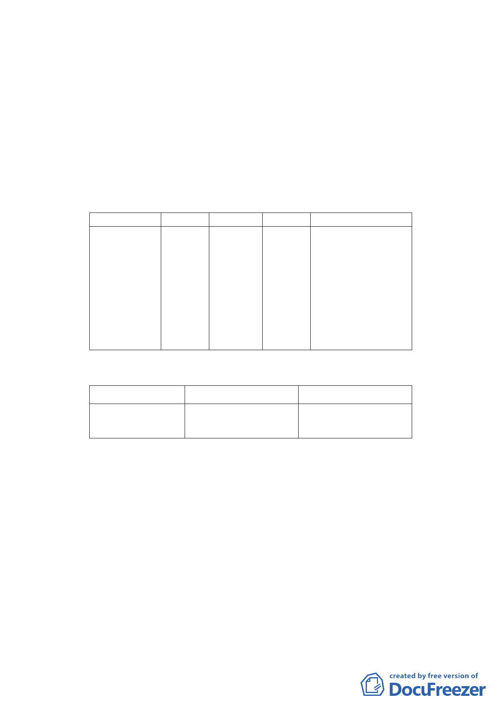

上，總戶數為23戶。其中四層樓戶數為4戶及五層樓戶數
為15戶，佔區內總戶數比例達82.61％，建物老舊窳陋，
結構上有耐震及防火安全的顧慮，有待透過都市更新方式
加以改善。
（三） 土地權屬：
公有土地面積(管理機關為國立臺灣大學及財政部國有財
產局)佔48.62%，私有土地面積佔51.38％。
四、 變更細部計畫內容：
（一）變更土地使用分區
位置
原計畫 新計畫 面積（㎡）
變更理由
新生南路三
段以西、新
配合「修訂臺北市
生南路三段
22 巷 以
北、溫州街
以東及新生
第三種
住宅區
第三種
住宅區
(特)
2,143
老舊中低層建築社
區辦理都市更新擴
大協助專案計
畫」，變更原計畫
南 路 三 段 16
內容。
巷以南
（二）土地使用分區管制
1.使用強度
使用分區
原計畫
新計畫
第三種住宅區
建蔽率45%
建蔽率45%
（特）
容積率225%
容積率225%
2.使用管制
本計畫之使用比照臺北市土地使用分區管制自治條例第三種
住宅區之使用組別。
3.本計畫區得適用100年9月20日公告之「修訂臺北市老舊中低
層建築社區辦理都市更新擴大協助專案計畫」之容積獎勵。
本計畫區總容積上限不得超過建築基地2倍法定容積。
4.本計畫區獎勵容積核給額度，依本市都市設計及土地使用開
發許可審議委員會及都市更新及爭議處理審議會審議結果辦
理。
五、 全案係市府101年2月23日府都規字第10038645903號函送到
會，並於101年2月24日起公開展覽30天。
六、 公民或團體所提意見：無。
-7-